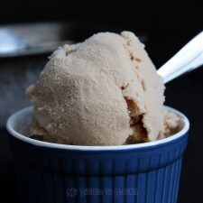

Cola de mono-Helado chileno
Ingredientes
- 1 litro de leche líquida
- 1 taza de azúcar granulada
- 3 cucharaditas de café instantáneo en polvo
- 1 taza (240ml) de aguardiente
- 5 clavos de olor
- 1 pedazo de cáscara de naranja
- 1 cucharadita de esencia de vainilla
- 2 palitos de canela
Preparacion
- Colocar en una olla la leche, azúcar, clavos de olor, cáscara de naranja, nuez moscada y palos de canela. Revolver hasta disolver el azúcar. En una taza disolver las 3 cucharaditas de café con un poco de agua caliente. Reservar. Cuando la leche suelte el primer hervor, apagar el fuego y agregar el café y la esencia de vainilla. Dejar enfriar. Finalmente agregar el aguardiente. Pasar la mezcla por un colador.
- Luego colocar la mezcla en una máquina para hacer helado y seguir la intrucciones del fabricante.
- En caso de no contar con una máquina, coloque la mezcla en un envase plástico con tapa y la lleva al refrigerador por 2 horas. Sacar del freezer y revolver enérgicamente por unos minutos y nuevamente llevar al freezer por varias horas antes de servir.